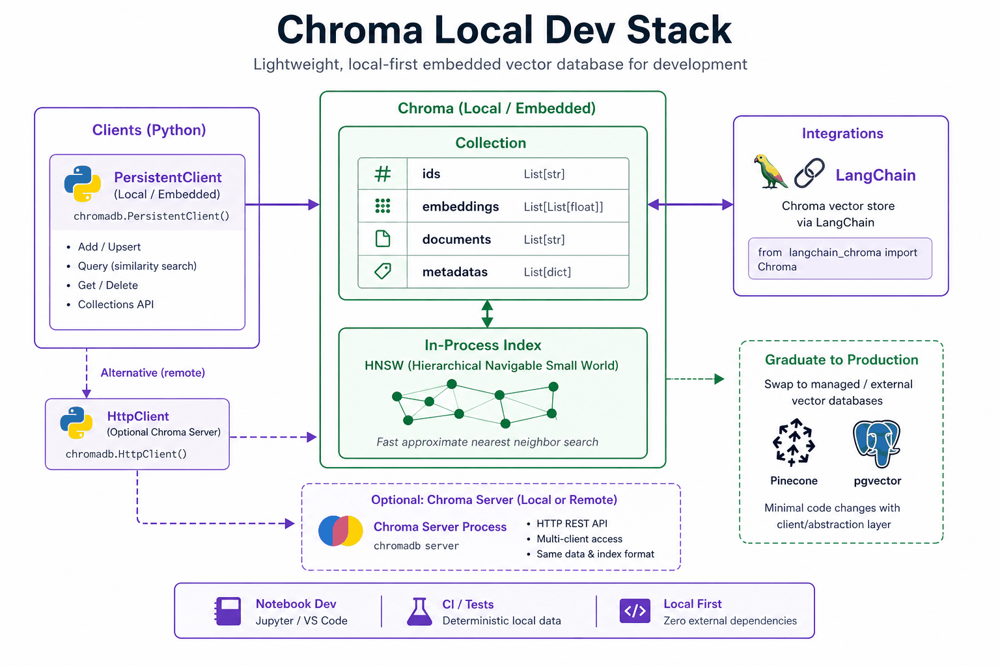
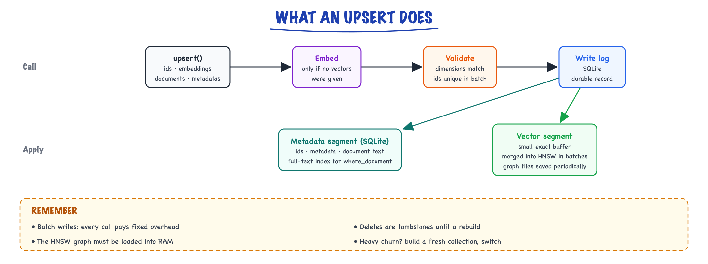
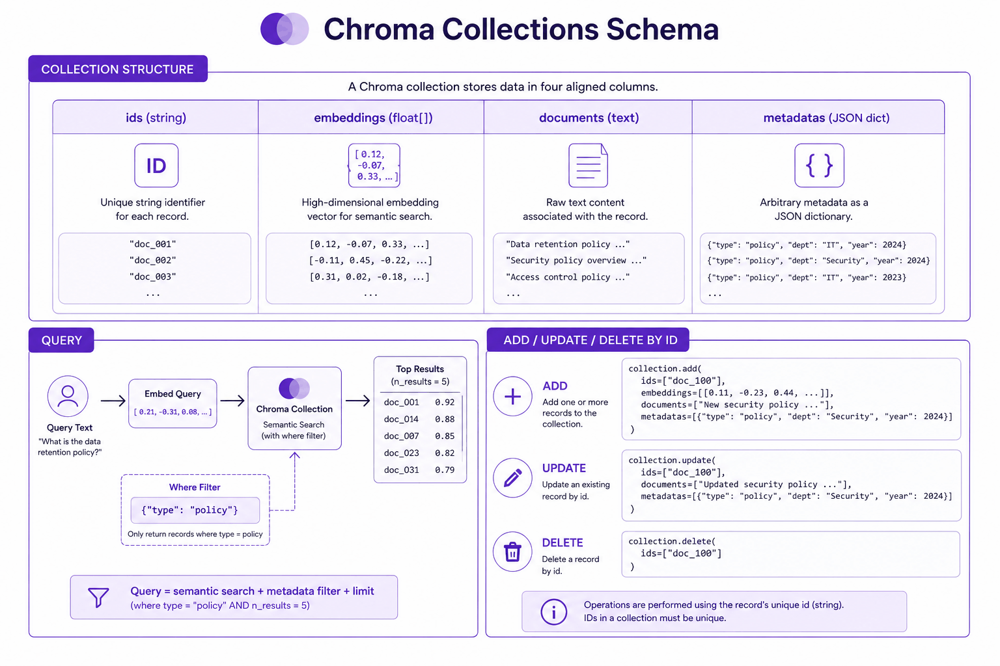
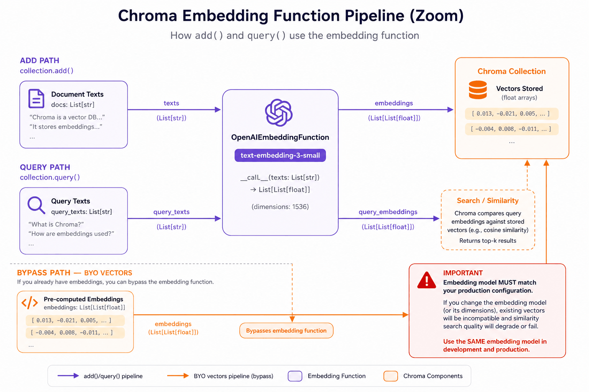

Chroma // Tech & tools
Lightweight embedded vector store for prototypes and local RAG.
01 — At a glance
Embedded open-source vector database for local dev and prototypes: pip install chromadb, in-process or client/server mode, collections, metadata filters, and LangChain/LlamaIndex integration. Graduate to pgvector or Pinecone before production SLAs. See Vector search & databases and compare with Weaviate.

Chroma: Python client → Collection (ids + embeddings + documents + metadatas) → HNSW in-process or Chroma server → query top-k. Ideal for notebooks and CI; graduate before paying-customer SLAs.
02 — New words
| Word | Meaning |
|---|---|
| Embedded database | A database that runs as a library inside your application's process, with no separate server. SQLite is the classic example. |
| Collection | Chroma's unit of storage: a named set of records, each with an id, a vector, an optional document text and optional metadata. |
| Embedding function | A function attached to a collection that turns text into vectors, so you can add and query with text instead of vectors. |
| Distance space | How "near" is measured: squared Euclidean (l2), cosine distance, or inner product. Fixed when the collection is created. |
| HNSW | Hierarchical navigable small world graph: the approximate nearest-neighbour index Chroma uses. Fast search by walking a graph of neighbours. |
| Brute-force (exact) search | Comparing the query with every candidate vector. Always correct; cost grows linearly with the number of candidates. |
Metadata filter (where) | A condition on metadata fields (equals, greater than, in a list, and/or) that restricts which records may be returned. |
Document filter (where_document) | A condition on the stored text, such as "contains this substring". A filter, not a relevance ranking. |
| Upsert | Insert a record, or replace it if the id already exists. Makes re-running ingestion safe. |
| Tombstone | A marker that a record was deleted. The graph node stays until the index is rebuilt or compacted. |
| Persistent / ephemeral / HTTP client | The three ways to run Chroma: on-disk in your process, in-memory in your process, or as a server you call over the network. |
The lesson
03 — The question
Every RAG system needs somewhere to store vectors and find the nearest ones. When you are building the first version, you do not want a cloud account, a cluster, or a schema migration; you want to write five lines in a notebook and have retrieval working. Chroma exists for that moment. It is an open-source vector store that you install with pip, that runs inside your Python process, and that keeps vectors, text and metadata together in one directory on disk.
Interviewers ask about it in three ways:
- What does Chroma actually do when you add and query, and where does the data live?
- What breaks as the prototype grows, and what are the numbers at which it breaks?
- When would you choose it, and what would you move to and why?
The running example: you are building a support assistant for a company that makes home Wi-Fi routers. Version one indexes the manuals for two products, the X100 and X200: 3,000 chunks of about 400 tokens, embedded with a small 384-dimension model. Later the company wants every manual for 400 products plus two million community forum posts, embedded with a 1,536-dimension model. We will follow Chroma from the first notebook to the point where it should be replaced.
04 — Step 1: the mental model, a library that happens to be a database
Chroma's design choice is that the database is a library. Import it, point it at a directory, and the index lives in your process's memory while the data lives in files under that directory. There is no network hop, no connection pool, and no separate service to deploy. That is the reason it is pleasant in notebooks and tests, and it is also the source of every limit discussed later.
There are three ways to run it, and they are the same API underneath:
- Ephemeral (in-memory): everything vanishes when the process exits. Ideal for unit tests, where each test gets a fresh store.
- Persistent: in-process, saved to a directory. Ideal for a notebook or a single-user app; restart and the data is still there.
- Client/server: run Chroma as a server (for example in a container) and connect with an HTTP client. Now several processes can share one store, at the cost of a network hop. A hosted cloud version follows the same client API.
Hold this picture: one process owns the index; other processes, if any, talk to that process. Most production questions about Chroma reduce to "what happens when that one process is not enough?"
05 — Step 2: the data model, four parallel fields
A collection stores records with four fields, passed as parallel lists:
| Field | Example for one router-manual chunk | Notes |
|---|---|---|
ids | "x200-manual:ch07:3" | Unique string you choose. Deterministic ids make re-ingestion idempotent. |
embeddings | 384 floats | Optional if the collection has an embedding function. |
documents | The chunk text | Returned with results, so RAG can put it straight into a prompt. |
metadatas | {"product": "x200", "section": "firmware", "page": 41} | Flat key-value pairs of strings, numbers and booleans; used in filters. |
The id deserves thought. If ids are random, re-running ingestion after a crash duplicates every chunk, and you cannot find "all chunks of the X200 manual" to replace them. If ids are document:section:index, ingestion becomes an upsert that is safe to repeat, and a document's chunks can be found and deleted by id or by a doc_id metadata field.
Two rules for collections follow from the next step: one collection per embedding model (vectors from different models are not comparable), and one collection per distance space (it is fixed at creation). A common pattern is to name collections after both, such as manuals_minilm_cosine_v1, so a model change is a new collection built side by side rather than an in-place edit.
06 — Step 3: distance spaces and embedding functions, the silent failures
Chroma's default distance is squared Euclidean (l2), not cosine. That matters because most text-embedding models are trained and evaluated with cosine similarity, which ignores vector length, while Euclidean distance does not.
A two-dimensional example shows the difference. The query is \(q = (1.5, 1.0)\). Record b \(= (3.0, 2.0)\) points in exactly the same direction as \(q\) but is twice as long; record a \(= (1.0, 0.1)\) is shorter and points elsewhere. Under cosine distance, b is a perfect match (distance 0). Under squared L2, b is at \((1.5^2 + 1^2) = 3.25\) and a at \(0.5^2 + 0.9^2 = 1.06\), so a ranks first. Same data, opposite answer.
When vectors are normalised to length 1, the two agree on order, because for unit vectors
\[ \lVert u - v \rVert^2 = 2 - 2\cos(u, v) \]so a cosine similarity of 0.6 is always a squared L2 distance of 0.8. Many embedding models output unit vectors, in which case the default is harmless; some do not. The safe habit is to set the space to cosine explicitly at creation, and to know which way your scores run: Chroma returns distances, where smaller is better, not similarities.
The second silent failure is the embedding function. If you add text and let the collection embed it, and later query with vectors from a different model (or the same model at a different version), every query returns confident nonsense with no error. Chroma's built-in default is a small local sentence-transformer, which is convenient for a demo and almost never the model you will use in production. Prefer to compute embeddings yourself with the production model and pass embeddings= on both add and query, so one piece of code owns the model choice; or attach the production model's embedding function explicitly and never rely on the default. Choosing that model is covered in choosing an embedding model.
07 — Step 4: the write path
In the single-node implementation, an add or upsert does roughly this:

An upsert is embedded if needed, validated and recorded in a durable SQLite write log, then applied to the metadata segment and to the vector segment, where new vectors wait in a small buffer before being merged into the HNSW graph.
Three consequences are worth knowing.
Batch your writes. Each call pays fixed overhead (validation, a SQLite transaction, possibly an embedding call). Adding the 3,000 manual chunks one at a time is far slower than a few calls of a few hundred each. There is a maximum batch size per call, which the client can report; chunk large ingestions to stay under it.
Updates and deletes are not free in the graph. HNSW is a graph of links between vectors. Removing a node cleanly would mean repairing its neighbours' links, so deleted records are marked as deleted (tombstoned) and skipped during search. A collection with heavy churn (re-ingesting the forum every night) accumulates tombstones that still occupy memory and slow the walk, until the index is rebuilt. If most of a collection changes regularly, building a fresh collection and switching to it is often cleaner than upserting in place.
The index lives in memory. The HNSW graph must be loaded into RAM to be searched. Opening a large persisted collection means reading the graph from disk first, which is part of why a cold start on a big collection is slow.
08 — Step 5: the query path and how filters work
A query takes either text (embedded with the collection's function) or a vector, a number of results, optional filters, and an include list that controls what comes back (documents, metadata, distances, embeddings). The path:
- Filter first. If there is a
whereorwhere_documentcondition, the metadata segment evaluates it in SQLite and produces the set of allowed ids. - Search within the allowed set. The vector segment walks the HNSW graph, skipping ids outside the allowed set; recent writes still in the exact buffer (Step 4) are compared directly. How small allowed sets are handled (graph walk or brute force) differs between versions, so measure filtered recall rather than assuming it.
- Fetch payloads. For the top results, documents and metadata are read from SQLite and returned with distances.
Because the filter is applied before ranking, a query for "firmware update" restricted to {"product": "x200"} returns the best X200 chunks, not the best overall chunks with the X100 ones thrown away afterwards. That is the right semantics for permissions and product scoping (the reasons are in making RAG good). The cost shows up with filters that keep very few records spread thinly across the graph: the walk must skip many neighbours, and results can be slower or, in the worst case, fewer than requested. If one filter value dominates your queries (say, product), a separate collection per value avoids the problem entirely.
Know what where_document is: a substring or pattern test on the stored text. It can require that a chunk contains "WPS", but it does not rank by keyword relevance the way BM25 does. If exact terms such as model numbers and error codes matter to relevance, you need real hybrid search, which means a keyword index alongside Chroma and fusion in your code, or a database with hybrid built in.
09 — Step 6: sizing it on one machine
Memory is the first limit, so put numbers on it. Raw vectors cost dimensions × 4 bytes (32-bit floats). The HNSW graph adds neighbour links: with the common setting of \(M = 16\), the bottom layer keeps up to \(2M = 32\) neighbour ids per vector, about 128 bytes, plus a little for upper layers.
| Corpus | Vectors | Graph links | Verdict |
|---|---|---|---|
| Version one: 3,000 chunks × 384 dims | 4.6 MB | under 0.5 MB | Trivial. Even exact search is instant. |
| Grown: 2M chunks × 384 dims | 3.1 GB | about 0.26 GB | Fits a large laptop or one server. |
| Grown: 2M chunks × 1,536 dims | 12.3 GB | about 0.26 GB | Needs a dedicated machine with headroom; cold load takes a while. |
Two things follow. First, dimensions dominate: moving from a 384-dimension to a 1,536-dimension model quadruples memory. Second, the documents and metadata live on disk in SQLite, so text size affects disk and fetch time but not the RAM needed for search.
Search quality and speed are tuned with the HNSW parameters: \(M\) (links per node; more links, better recall, more memory), the construction search width (better graph, slower build) and the query search width (better recall, slower queries). The trade-offs are the same in every HNSW-based database and are explained in vector search. For the 3,000-chunk prototype, none of this matters; at millions, measure recall@10 against exact search on a sample of queries before trusting the defaults.
10 — Step 7: concurrency, durability and operations
The embedded design has consequences beyond memory.
- One writer process. Two processes opening the same persistent directory and writing to it can corrupt or lose data: each holds its own copy of the in-memory index and neither knows about the other's writes. As soon as more than one process (an ingestion worker and a web server, or several web workers) needs the store, run Chroma as a server and have everyone connect to it.
- No replication. A single server is a single point of failure. If it is down, retrieval is down. There is no built-in failover in the self-hosted single node, so availability targets have to be met some other way (a hosted service, or a different database).
- Backups are file copies. The persistent directory is the database. Copy it while nothing is writing, or snapshot the volume. Keep the source documents and the ingestion code as the real source of truth, so the index can always be rebuilt from scratch.
- Upgrades. The on-disk format has changed across major versions. Pin the version, and treat an upgrade as "rebuild or migrate the index, then run the retrieval tests".
None of these is a flaw for the use case Chroma targets. They are the reason the honest answer to "can we put this in production?" is "for a single-service, single-region workload with a rebuildable index and modest availability needs, yes; beyond that, choose something built for it".
11 — Step 8: Chroma as a test fixture
One of Chroma's best production uses is not in production at all. Retrieval code needs tests, and tests need a vector store that starts empty, runs without a network, and behaves like the real one. An ephemeral collection, filled with a small fixture corpus, gives exactly that.
For the router assistant, a CI test might load 200 fixture chunks with precomputed embeddings (stored in the repository, so the test needs no model), run the 30 golden questions, and assert that recall@5 is at least 0.9 and that no X100 chunk is returned when the filter says X200. That catches the bugs that matter most in retrieval code: a wrong filter, a dropped field, a changed id scheme, a distance flipped from cosine to L2. It is the same golden-set discipline as in evaluating LLM features, scaled down to run in seconds.
12 — A worked example: from notebook to the graduation point
Follow the router assistant through three stages.
Week 1, notebook. A persistent client, one collection manuals_minilm_cosine_v1 with the space set to cosine, 3,000 chunks with ids like x200-manual:ch07:3 and metadata for product, section and page. Queries filter by the product the customer owns. 4.6 MB of vectors: everything is instant, and the team spends its time on chunking and prompts, which is where it should go.
Month 2, internal pilot. A small web service and a nightly ingestion job both need the store, so Chroma moves to server mode in a container with a persistent volume. The team switches to a stronger 1,536-dimension embedding model by building manuals_large_cosine_v1 beside the old collection, comparing recall on the golden set, then pointing the service at the new one. Still well within one machine.
Month 6, launch planning. Requirements arrive: all 400 products plus 2 million forum posts (2M vectors, 12.3 GB at 1,536 dimensions), forum posts re-ingested nightly (heavy churn and tombstones), 99.9% availability for a customer-facing product, keyword matching on model numbers and error codes, and per-customer data for an enterprise tier. Every one of these presses on a limit from Steps 5 to 7. This is the graduation point, and the choice depends on what the company already runs:
- Already operating Postgres, with relational data to join (customers, products, entitlements): pgvector.
- No appetite for running a database, needs managed scaling and per-tenant isolation: Pinecone.
- Wants built-in hybrid search and native multi-tenancy, self-hosted or managed: Weaviate.
The migration is cheap if the earlier stages were disciplined: deterministic ids, embeddings computed by your own code, metadata as flat fields, and a golden set to prove the new store retrieves at least as well as the old.
13 — When to choose Chroma
| Situation | Chroma? | Reason |
|---|---|---|
| Notebook, prototype, hackathon | Yes | Zero setup, text and metadata stored with vectors |
| Unit and integration tests for retrieval code | Yes | Ephemeral, offline, same API as the real store |
| Desktop or single-user local app | Yes | Embedded, no server to install |
| Internal tool, one service, under a few million vectors, rebuildable index | Reasonable | Server mode on one machine is enough |
| Customer-facing with an availability target | Rarely self-hosted | No replication or failover in a single node |
| Data that must join relational tables transactionally | No | pgvector keeps vectors and rows in one transaction |
| Keyword relevance (codes, names) matters | Only with an external keyword index | Document filters are not BM25 ranking |
14 — In code: the real API, and a model of it
# Not run here: needs `pip install chromadb`. Written against chromadb's documented Python API (2025). import chromadb OP = "$" # filter operators are a dollar sign plus a name: and, or, eq, gte, in, contains ... client = chromadb.PersistentClient(path="./chroma_data") # or EphemeralClient() in tests col = client.get_or_create_collection( name="manuals_large_cosine_v1", metadata={"hnsw:space": "cosine"}, # newer versions also accept configuration={"hnsw": {"space": "cosine"}} ) col.upsert( # idempotent: same ids replace, not duplicate ids=["x200-manual:ch07:3", "x100-manual:ch02:1"], embeddings=[emb_a, emb_b], # computed by YOUR production embedding model documents=["To update firmware, open Settings ...", "Press WPS for 3 seconds ..."], metadatas=[{"product": "x200", "section": "firmware", "page": 41, "doc_id": "x200-manual"}, {"product": "x100", "section": "setup", "page": 6, "doc_id": "x100-manual"}], ) res = col.query( query_embeddings=[query_vec], n_results=5, where={OP + "and": [{"product": "x200"}, {"page": {OP + "gte": 10}}]}, where_document={OP + "contains": "firmware"}, include=["documents", "metadatas", "distances"], # distances: smaller is closer ) col.delete(where={"doc_id": "x200-manual"}) # replace a manual: delete its chunks, then upsert
The same ideas in a few lines of numpy, runnable anywhere: parallel fields, upsert by id, filter first, then rank in the collection's distance space.
import numpy as np class MiniCollection: """The shape of a Chroma collection: parallel ids / vectors / documents / metadata.""" def __init__(self, space="l2"): self.space, self.ids, self.vecs, self.docs, self.meta = space, [], [], [], [] def upsert(self, ids, embeddings, documents, metadatas): for i, e, d, m in zip(ids, embeddings, documents, metadatas): if i in self.ids: # upsert = replace by id k = self.ids.index(i) self.vecs[k], self.docs[k], self.meta[k] = e, d, m else: self.ids.append(i); self.vecs.append(e); self.docs.append(d); self.meta.append(m) def query(self, q, n_results, where=None): allowed = [k for k, m in enumerate(self.meta) # 1. filter on metadata first if not where or all(m.get(f) == v for f, v in where.items())] V, q = np.array([self.vecs[k] for k in allowed]), np.asarray(q) if self.space == "l2": # 2. distance in the collection's space dist = ((V - q) ** 2).sum(1) # squared L2 else: dist = 1 - V @ q / (np.linalg.norm(V, axis=1) * np.linalg.norm(q)) order = np.argsort(dist)[:n_results] # 3. top-k of the allowed set return [(self.ids[allowed[k]], round(float(dist[k]), 3) + 0.0) for k in order] vecs = {"a": [1.0, 0.1], "b": [3.0, 2.0], "c": [0.4, 0.5]} # b points the same way as q but is long meta = {"a": {"product": "x200"}, "b": {"product": "x200"}, "c": {"product": "x100"}} q = [1.5, 1.0] for space in ("l2", "cosine"): col = MiniCollection(space) col.upsert(list(vecs), list(vecs.values()), ["..."] * 3, [meta[i] for i in vecs]) print(space, col.query(q, 2), "| x200 only:", col.query(q, 2, where={"product": "x200"})) u, v = np.array([0.6, 0.8]), np.array([1.0, 0.0]) # unit vectors print("cos", u @ v, "squared L2", round(((u - v) ** 2).sum(), 3), "= 2 - 2cos", 2 - 2 * (u @ v))
Under l2 the top result is a at 1.06; under cosine it is b at 0.0: Step 3's reversal. With the X200 filter, c can never appear, and the last line confirms that for unit vectors a cosine of 0.6 is a squared L2 distance of 0.8.
Quick reference
15 — What & Why
Chroma is the fastest path to a working vector store in Python — zero cloud signup, zero infra. It wraps HNSW indexing, metadata filtering, and optional auto-embedding behind a simple Collection API. It is a development and prototyping tool, not a production multi-tenant vector platform.
Functional requirements
- Collections — named stores of ids, embeddings, documents, metadata
- add / query / update / delete by id with metadata filters
- Embedding functions — auto-embed on add and query, or bring your own vectors
- Persistence — disk-backed PersistentClient or ephemeral in-memory
- Client/server — optional Docker server for team-shared dev DB
Non-functional requirements (dev context)
- Latency: fine for local dev; not tuned for production p99 SLOs
- Scale: comfortable to ~500K vectors on a laptop; slows beyond
- HA: none — single process; no replication
- Multi-tenant: weak — separate collections, not enterprise isolation
Graduation signal: when you need SLAs, >500K vectors, multi-tenant ACL, or hybrid BM25 — move to pgvector, Pinecone, or Weaviate.
16 — Core Concepts
| Term | Definition | Gotcha |
|---|---|---|
| Collection | Named set of embeddings + docs + metadata. | Like Pinecone; one per use case / embed version. |
| PersistentClient | Disk-backed storage at a path. | Survives restarts; backup = copy directory. |
| EphemeralClient | In-memory only. | Lost on exit — good for unit tests. |
| EmbeddingFunction | Auto-embed documents on add/query. | Must match production embed model. |
| where filter | Metadata predicate on query. | Simpler DSL than Pinecone; no pre/post distinction docs. |
| where_document | Full-text contains filter on document body. | Not BM25 — basic contains; not hybrid search. |
| HttpClient | Remote client to Chroma server. | Team dev only — not HA cluster. |
17 — API / Interface Surface
Basic usage (persistent + OpenAI embed)
import chromadb
from chromadb.utils import embedding_functions
ef = embedding_functions.OpenAIEmbeddingFunction(
api_key=os.environ["OPENAI_API_KEY"],
model_name="text-embedding-3-small",
)
client = chromadb.PersistentClient(path="./chroma_db")
col = client.get_or_create_collection(
name="docs_v1",
embedding_function=ef,
metadata={"embed_model": "text-embedding-3-small"},
)
col.add(
ids=["handbook:0", "handbook:1"],
documents=["Refund within 30 days.", "Enterprise SLA is 99.9%."],
metadatas=[{"type": "policy", "page": 1}, {"type": "policy", "page": 2}],
)
results = col.query(
query_texts=["What is the refund policy?"],
n_results=5,
where={"type": "policy"},
include=["documents", "metadatas", "distances"],
)
Bring your own vectors (prod model parity)
col.add(
ids=["chunk-42"],
embeddings=[precomputed_vector], # skip EmbeddingFunction
documents=["..."],
metadatas=[{"source": "handbook.pdf"}],
)
col.query(
query_embeddings=[query_vector],
n_results=20,
where={"source": {"$eq": "handbook.pdf"}},
)
18 — When to Use / When NOT
| Scenario | Use Chroma | Alternative |
|---|---|---|
| Notebook RAG demo | Yes — 5 lines to working retrieval | — |
| CI / unit tests for retriever | Yes — EphemeralClient | Mock vector store |
| Hackathon / MVP demo | Yes | — |
| Production multi-tenant SaaS | No | Pinecone, pgvector |
| Hybrid BM25 + vector | No | Weaviate |
| SQL JOINs with users | No | pgvector |
| >500K vectors | No — performance degrades | Managed vector DB |
19 — Architecture
Notebook/App ──► chromadb Client
└── Collection "docs_v1"
├── SQLite (metadata, docs)
└── HNSW index (vectors)
Optional: chroma run ──► HttpClient (team shared dev)
Chroma runs in-process with your Python app — no separate cluster. That simplicity is the feature for dev; it is the limitation for production.
20 — Deep Dive: Collections
A Collection is the unit of organization — analogous to a Pinecone or a pgvector table.
| Field | Type | Notes |
|---|---|---|
| ids | string[] | Unique per collection; use doc_id:chunk_idx |
| embeddings | float[][] | Optional if EmbeddingFunction set |
| documents | string[] | Raw text; returned in query for RAG context |
| metadatas | dict[] | Filterable JSON; keep values str/int/float/bool |
Metadata filter examples
col.query(
query_texts=["return policy"],
n_results=10,
where={"type": {"$eq": "policy"}, "page": {"$gte": 1}},
)
col.query(
query_texts=["error"],
where_document={"$contains": "ECONNREFUSED"},
)
col.update()— change document/metadata by idcol.delete(ids=[...])orwhere=filter deletecol.get()— fetch by id without similarity search

Collection schema: parallel arrays for ids, embeddings, documents, metadatas. Query with where metadata filter and n_results top-k.
21 — Deep Dive: Embedding Functions
Chroma can embed for you via EmbeddingFunction plugins — convenient for demos, dangerous if the demo model differs from production.
| Function | When |
|---|---|
OpenAIEmbeddingFunction | Quick OpenAI embed in notebook |
SentenceTransformerEmbeddingFunction | Local model, no API key |
ONNXMiniLM_L6_V2 | Default local fallback in some versions |
BYO embeddings= | Production parity testing — recommended |
# Production-parity pattern: embed in your pipeline, not in Chroma
from openai import OpenAI
client = OpenAI()
def embed(texts):
r = client.embeddings.create(model="text-embedding-3-small", input=texts)
return [d.embedding for d in r.data]
vectors = embed(["Refund within 30 days."])
col.add(ids=["1"], embeddings=vectors, documents=["..."], metadatas=[{}])
Gotcha: default local embed model ≠ OpenAI production model — retrieval eval in Chroma will not predict production recall. See Choosing an embedding model.

Embedding path: document text → EmbeddingFunction (e.g. OpenAI) → stored vector. Query must use the same function or BYO query vector.
22 — Client / Server Modes
| Mode | Code | Use case |
|---|---|---|
| Persistent | PersistentClient(path="./db") | Local dev with restart survival |
| Ephemeral | EphemeralClient() | Unit tests, one-off scripts |
| Http | HttpClient(host="localhost", port=8000) | Team-shared dev server |
# Start server (team dev)
# docker run -p 8000:8000 chromadb/chroma
client = chromadb.HttpClient(host="localhost", port=8000)
col = client.get_or_create_collection("shared_docs")
Docker Chroma server is for shared development — not a replacement for Pinecone HA or pgvector replication.
23 — Integrations
LangChain
from langchain_chroma import Chroma
from langchain_openai import OpenAIEmbeddings
vectorstore = Chroma(
collection_name="docs",
embedding_function=OpenAIEmbeddings(model="text-embedding-3-small"),
persist_directory="./chroma_db",
)
retriever = vectorstore.as_retriever(search_kwargs={"k": 20})
LlamaIndex
from llama_index.vector_stores.chroma import ChromaVectorStore
import chromadb
db = chromadb.PersistentClient(path="./chroma_db")
chroma_collection = db.get_or_create_collection("docs")
vector_store = ChromaVectorStore(chroma_collection=chroma_collection)
Keep the same chunk IDs and metadata schema when swapping backend to Pinecone or pgvector — only the VectorStore config changes.
24 — Graduation Path
Design your retriever interface so Chroma is swappable from day one:
- Stable chunk IDs:
{doc_id}:{chunk_idx}across all backends - Metadata schema: tenant_id, source, page, doc_type, embed_model
- Embed in pipeline: not inside Chroma — same code paths for prod
- Config-driven backend: env var
VECTOR_BACKEND=chroma|pgvector|pinecone - Export script: dump ids, embeddings, metadatas → upsert to prod store
| Graduate to | When |
|---|---|
| pgvector | On Postgres, <10M vectors, need JOINs/ACID |
| Pinecone | Multi-tenant SaaS, managed scale, zero vector ops |
| Weaviate | Hybrid BM25+vector is core requirement |
In production
25 — Production & Ops
Chroma is not recommended for production multi-tenant SLAs. If forced into a single-tenant internal tool:
- Persistent volume with regular directory backup
- Single-tenant only; no shared server with untrusted users
- Monitor collection size; re-index if >500K vectors feel slow
- Contract test that retriever swaps to pgvector/Pinecone in prod config
Interview answer: “Chroma in prod with paying users” is a red flag — cite graduation path to pgvector or Pinecone.
27 — Where people get lost
- Chroma in prod with paying users: no HA, weak multi-tenant isolation.
- Default embed model ≠ prod model: demo recall misleads.
- Shared HttpClient server without auth: any team member can read/write all collections.
- No graduation plan: prototype becomes “production” under load.
- Storing only documents, no metadata: cannot filter by tenant or doc type.
- Expecting hybrid search: where_document is contains, not BM25 — use Weaviate.
- One collection for staging + prod: test data pollutes retrieval.
- "Distances are similarities." Chroma returns distances: smaller is closer. A threshold written as "keep scores above 0.8" silently keeps the worst matches.
- Leaving the default L2 space with unnormalised embeddings. Rankings change with vector length. Set cosine explicitly at creation; it cannot be changed later.
- Relying on the default embedding function. The demo model is not your production model, and mixing models between add and query fails silently. Compute embeddings in your own code.
- Two processes writing one persistent directory. Each holds its own in-memory index; data is lost or corrupted. Use server mode for more than one process.
- Random ids. Re-ingestion duplicates everything and documents cannot be replaced. Use deterministic
doc:section:indexids and adoc_idfield. - Treating
where_documentas keyword search. It filters by substring; it does not rank. Exact-term relevance needs a real hybrid setup. - Upserting a high-churn corpus forever. Tombstones accumulate in the graph. Rebuild into a fresh collection and switch.
28 — How this connects
Builds on
- Choosing an embedding model — Model families, dimensions, benchmarks, cost, and when to fine-tune or switch.
- Vector search & databases — Exact and approximate nearest neighbours, HNSW and IVF, and choosing a vector database.
- The RAG pipeline — Retrieve, augment, generate: every stage from a question to a grounded, cited answer.
- Hybrid search & query understanding — BM25 plus vectors fused with RRF, query rewriting, decomposition and HyDE.
- Making RAG good & measuring it — Advanced RAG, a production RAG chatbot design, retrieval and answer metrics, freshness, ACLs, latency, injection.
- Evaluating LLM features — Golden sets, graders, LLM-as-judge done properly, statistics, an eval harness in CI, online evaluation and error analysis.
29 — Check yourself
Your query returns chunks with distances 0.21, 0.35 and 0.90, and your code keeps results with "score > 0.3". What goes wrong?
How much RAM do the raw vectors of 5 million chunks need at 768 dimensions, and what roughly does an \(M = 16\) HNSW graph add?
For unit-length vectors, a match has cosine similarity 0.9. What squared L2 distance will an l2 collection report?
An ingestion worker and a FastAPI app with four workers all open the same PersistentClient path. What happens, and what is the fix?
You are changing from a 384-dimension to a 1,536-dimension embedding model. Describe the migration.
A product manager wants the router assistant launched to all customers with 99.9% availability next quarter. Do you keep Chroma?
Users search for error code "E-1042" and get chunks about unrelated errors. Will adding a where_document "contains E-1042" filter fix it?
What is Chroma best for?
Persistent vs ephemeral client?
How filter metadata in Chroma?
query(where={"field": "value"}) or operators $eq, $gte, $in. where_document={"$contains": "text"} for body search — not full BM25.Chroma vs FAISS?
Is Chroma production-ready?
Embedding function gotcha?
LangChain integration pattern?
from langchain_chroma import Chroma with persist_directory and embedding_function. Retriever as_retriever(k=20) drops into LCEL chain. Swap to PineconePGVector by changing VectorStore class only.How migrate from Chroma to Pinecone?
col.get(include=["embeddings","metadatas","documents"]). Transform to Pinecone upsert format. Write to namespace on Pinecone index. Switch retriever config; run golden eval before cutover.Client/server mode — when?
chroma run for team-shared dev database. Not production HA — single server, no replication. Compare Pinecone for managed multi-node.